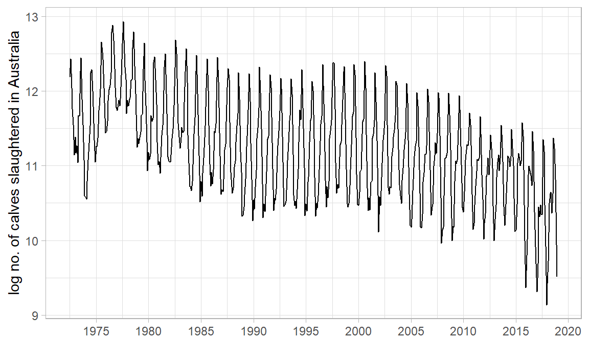
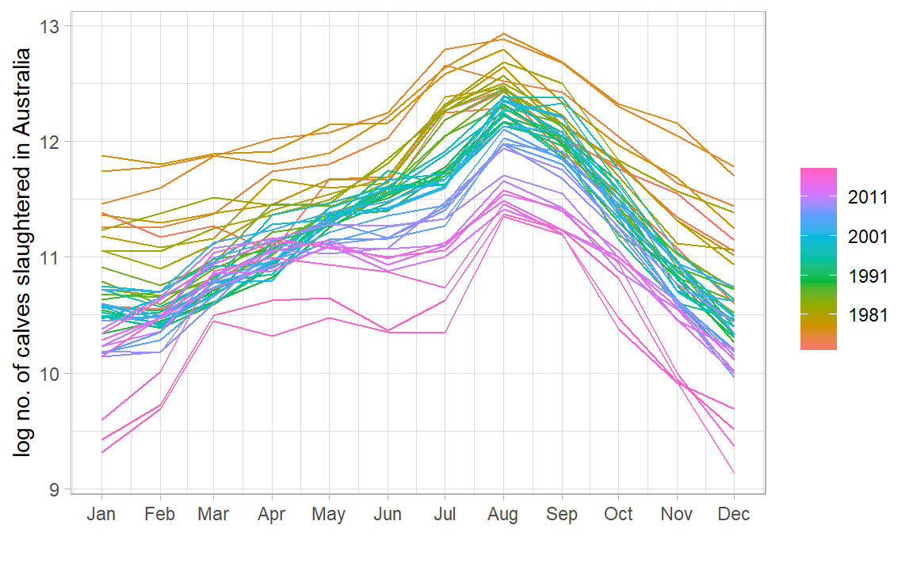
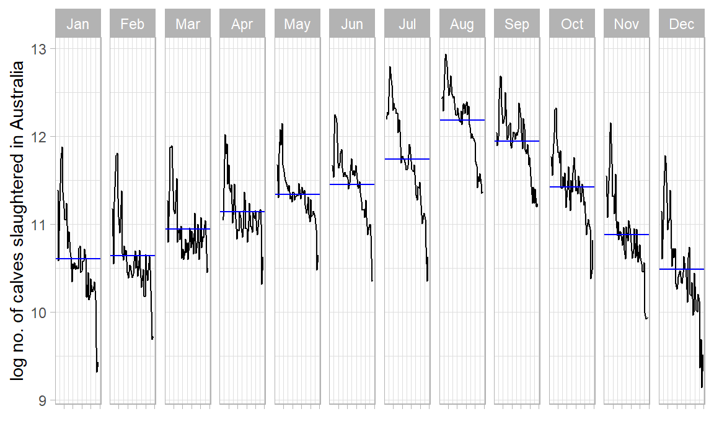
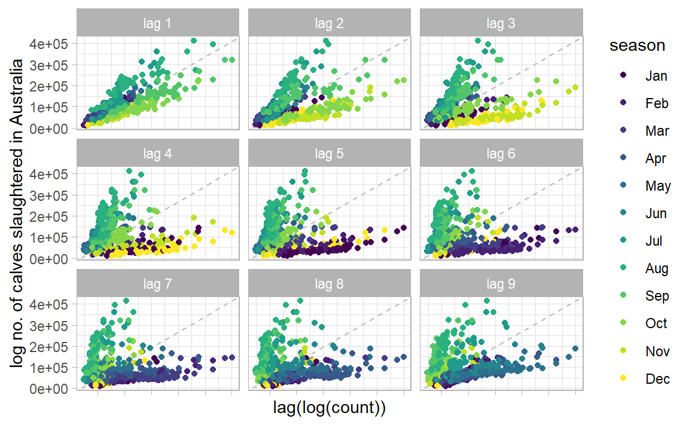

Time Series Intro
Applications of Data Science - Class 20
Giora Simchoni
Stat. and OR Department, TAU
2023-04-06
What is a Time Series?
A time series is a sequence of observations taken sequentially in time.
Code
library (tidyverse)library (tsibble)library (tsibbledata)library (feasts)|> filter (Animal == "Calves" ) |> index_by () |> summarise (Count = sum (Count)) |> autoplot (log (Count)) + labs (x = "" , y = "log no. of calves slaughtered in Australia" ) + scale_x_yearmonth (date_breaks = "5 year" , date_labels = "%Y" ) + theme_light ()

TSA Focuses on:
Discrete measurements
Equally-spaced
Usually no missing values
Not that short (say > 20? 50?)
Time is intrinsic, it is not just another feature
Could involve time-varying/non-time-varying explaining features
E.g. this is more of a longitudinal/growth-curve/cohort dataset:
TSA Goals
Forecasting (prediction)
Describing the TS dynamics
Determination of input features contribution
Planning: control schemes, intervention analyses, sensitivity analyses
Multivariate TS: interrelationships, clustering
The Date class
<- as.Date ("1915-6-16" )class (date_obj)
Internally, Date objects are stored as the number of days since January 1, 1970, using negative numbers for earlier dates.
So this naturally works:
[1] "1915-06-16" "1915-06-26"
Can also accept different formats and has a few built-in functions:
<- as.Date ("1/15/2001" ,format= "%m/%d/%Y" )months (date_obj)
The POSIX classes
POSIX is a slightly more evolved class from UNIX, holding number of seconds since January 1, 1970, and a time zone may be specified:
[1] "2023-04-06 09:44:34 IDT"
The POSIXlt class will store time in a list with useful elements:
<- as.POSIXlt (now, tz = "GMT" )$ hour
The lubridate package
Parsing dates:
Making dates:
make_date (year = 2013 , month = 2 , day = 12 )
Converting between formats:
Getting components:
<- ymd_hms ("2016-07-08 12:34:56" )year (datetime)
Duration, time maths:
today () - ymd ("2020-01-01" ) #base R difftime object
Time difference of 1191 days
as.duration (today () - ymd ("2020-01-01" ))
[1] "102902400s (~3.26 years)"
[1] "2022-04-05 18:00:00 UTC"
The Tidyverts
A suite of packages for TSA, the tidy way, led by Rob J. Hyndman :
tsibble: The data.frametibble re-imagined for temporal datatsibbledata: TS datasetsfeasts: Feature extraction for TS + Some useful gg plotsfable and fabletools: The modeling and forecasting packagemore and more to come.
See tidyverts.org .
tsibbleNeed a time index:
library (tsibble)tsibble (date = as.Date ("2017-01-01" ) + 0 : 9 ,value = rnorm (10 )
# A tsibble: 10 x 2 [1D]
date value
<date> <dbl>
1 2017-01-01 -0.653
2 2017-01-02 -0.617
3 2017-01-03 -0.909
4 2017-01-04 -0.154
5 2017-01-05 -0.359
6 2017-01-06 1.19
7 2017-01-07 1.58
8 2017-01-08 -0.266
9 2017-01-09 -0.504
10 2017-01-10 -2.03
Here, as date is the only Datetsibble gets this.
[1D] is the tsibble’s interval.
Grouping variable(s) are specified with key:
tsibble (qtr = rep (yearquarter ("2010 Q1" ) + 0 : 9 , 3 ),group = rep (c ("x" , "y" , "z" ), each = 10 ),value = rnorm (30 ),key = group
# A tsibble: 30 x 3 [1Q]
# Key: group [3]
qtr group value
<qtr> <chr> <dbl>
1 2010 Q1 x -0.0258
2 2010 Q2 x -0.272
3 2010 Q3 x -0.500
4 2010 Q4 x 0.795
5 2011 Q1 x -0.594
6 2011 Q2 x -0.608
7 2011 Q3 x 0.537
8 2011 Q4 x -0.442
9 2012 Q1 x 0.493
10 2012 Q2 x -0.693
# … with 20 more rows
Here there are 54 TS combinations:
# A tsibble: 29,364 x 4 [1M]
# Key: Animal, State [54]
Month Animal State Count
<mth> <fct> <fct> <dbl>
1 1976 Jul Bulls, bullocks and steers Australian Capital Territory 2300
2 1976 Aug Bulls, bullocks and steers Australian Capital Territory 2100
3 1976 Sep Bulls, bullocks and steers Australian Capital Territory 2100
4 1976 Oct Bulls, bullocks and steers Australian Capital Territory 1900
5 1976 Nov Bulls, bullocks and steers Australian Capital Territory 2100
6 1976 Dec Bulls, bullocks and steers Australian Capital Territory 1800
7 1977 Jan Bulls, bullocks and steers Australian Capital Territory 1800
8 1977 Feb Bulls, bullocks and steers Australian Capital Territory 1900
9 1977 Mar Bulls, bullocks and steers Australian Capital Territory 2700
10 1977 Apr Bulls, bullocks and steers Australian Capital Territory 2300
# … with 29,354 more rows
Wrangling similar to the Tidyverse, only group_by() + summarise() on a time index would be index_by() + summarise():
<- aus_livestock |> filter (Animal == "Calves" ) |> index_by () |> summarise (count = sum (Count), log_count = log (count))
# A tsibble: 558 x 3 [1M]
Month count log_count
<mth> <dbl> <dbl>
1 1972 Jul 196200 12.2
2 1972 Aug 250600 12.4
3 1972 Sep 170100 12.0
4 1972 Oct 128500 11.8
5 1972 Nov 103400 11.5
6 1972 Dec 69200 11.1
7 1973 Jan 87800 11.4
8 1973 Feb 71300 11.2
9 1973 Mar 78200 11.3
10 1973 Apr 62600 11.0
# … with 548 more rows
feastsSeamless integration with ggplot2 and friends, use autoplot() from feasts:
|> autoplot (log_count) + labs (x = "" , y = "log no. of calves slaughtered in Australia" ) + scale_x_yearmonth (date_breaks = "5 year" , date_labels = "%Y" ) + theme_light ()
Some more useful plots:
library (feasts)|> gg_season (log_count) + labs (x = "" , y = "log no. of calves slaughtered in Australia" ) + theme_light ()

|> gg_subseries (log_count) + labs (x = "" , y = "log no. of calves slaughtered in Australia" ) + scale_x_yearmonth (labels = NULL ) + theme_light ()

|> gg_lag (log_count, geom = "point" ) + labs (x = "lag(log(count))" , y = "log no. of calves slaughtered in Australia" ) + scale_x_yearmonth (labels = NULL ) + theme_light ()

Some useful features for multiple series:
|> features (log (Count), quantile)
# A tibble: 54 × 7
Animal State `0%` `25%` `50%` `75%` `100%`
<fct> <fct> <dbl> <dbl> <dbl> <dbl> <dbl>
1 Bulls, bullocks and steers Australian C… -Inf -Inf -Inf 7.60 8.32
2 Bulls, bullocks and steers New South Wa… 10.8 11.1 11.3 11.4 11.9
3 Bulls, bullocks and steers Northern Ter… -Inf -Inf 4.61 7.85 9.74
4 Bulls, bullocks and steers Queensland 10.5 11.7 11.9 12.1 12.4
5 Bulls, bullocks and steers South Austra… 8.59 9.59 9.80 9.96 10.4
6 Bulls, bullocks and steers Tasmania 8.16 8.75 8.95 9.15 9.67
7 Bulls, bullocks and steers Victoria 10.4 10.8 11.0 11.1 11.8
8 Bulls, bullocks and steers Western Aust… 8.97 9.62 9.83 10.1 10.7
9 Calves Australian C… -Inf -Inf -Inf 4.61 7.17
10 Calves New South Wa… 7.60 9.62 9.83 10.0 11.0
# … with 44 more rows
|> group_by (Animal) |> summarise (total_count = sum (Count)) |> features (log (total_count), feat_stl) |> select (Animal, trend_strength, spikiness, linearity)
# A tibble: 7 × 4
Animal trend_strength spikiness linearity
<fct> <dbl> <dbl> <dbl>
1 Bulls, bullocks and steers 0.727 8.61e-11 0.0747
2 Calves 0.945 6.94e-10 -8.02
3 Cattle (excl. calves) 0.818 9.96e-11 0.656
4 Cows and heifers 0.881 1.56e-10 0.955
5 Lambs 0.834 1.34e-10 2.35
6 Pigs 0.930 1.42e-11 2.14
7 Sheep 0.931 6.26e-10 -4.38
Why did we need log? What would occur without it?
What other transformations are worth considering? Hint: “total monthly sales”
What is the 1st conclusion about no. of calves slaughtered in AUS? What is the 2nd?
Classical Decomposition
\[
y_t = S_t + T_t + R_t
\]
where \(S_t\) is the seasonal component, \(T_t\) is the trend, \(R_t\) is the remainder, all at time \(t\) .
Necessary but not sufficient condition: Make \(R_t\) “white noise”, i.e. \(R_t \sim \mathcal{N}(0, \sigma^2)\)
Decomposition can also be multiplicative:
\[
y_t = S_t \times T_t \times R_t
\]
But then we’d take \(\log(y_t)\) .
Make a long story short:
|> model (classical_decomposition (log_count)) |> components () |> autoplot () + labs (x = "" , y = "log no. of calves slaughtered in Australia" ) + scale_x_yearmonth (date_breaks = "5 year" , date_labels = "%Y" ) + theme_light ()